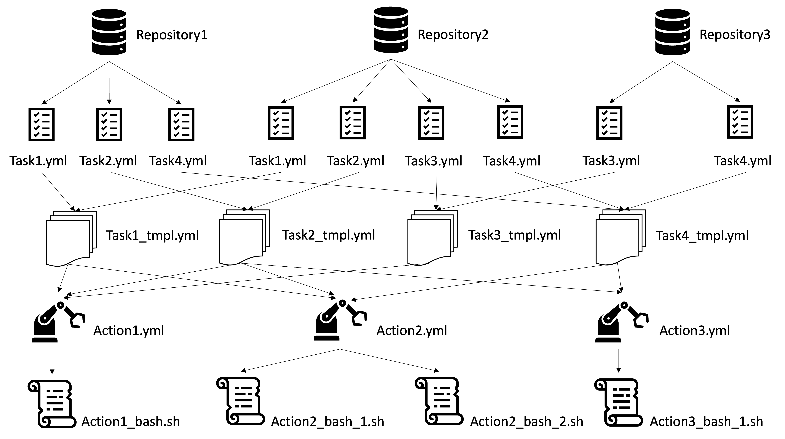

How NWX’s Continuous Integration (CI) Works¶
The purpose of this page is to document various aspects of NWX’s CI.
NWX has a lot of repositories. And more repositories will be added into NWX. To make the CIs of NWX generic and re-useable, we used reuseable workflows with composite actions for designing our CI architecture. The goal of this design was to keep the number of codes as minimal as possible in the individual repositories and to ensure maximum re-use of CI components across multiple repositories.
Here are a few useful tutorials on workflows in GitHub:
Currently the following repositories in NWChemEx-Project follow our 4-Layered CI Architecutre:
ChemCacheChemist.github(This is our configuration repository)MokupNWChemExParallelZonePluginPlaySimDESCFTensorWrapperUtilities
The Architecture¶
{kind=link}
Our CI architecture works in four layers:
1. CALLER WORKFLOWS LAYER (TOPMOST LAYER)¶
Workflows of individual repositories: Each repository under our CI architecture has at least one of the following workflows:
c-cpp.yaml: This builds the software and runs the unit tests;deploy_docs.yaml: This installs the dependencies, builds the documentation, and also deploys the documentation to the GitHub pages;format.yaml: This lints the C++ source code;test_docs.yaml: This installs the dependencies and builds the documentation.
In the architecture image these workflows are pictured as Task{{1,2,3,4}}.yaml.
Each of those workflows calls their corresponding template workflows that resides in the .github repository with some input parameters. These calls are as follows:
c-cpp.yamlcalls thec-cpp_tmpl.yamltemplate workflow with inputsdependenciesandCPP_GITHUB_TOKEN;deploy_docs.yamlcalls thedeploy_docs_tmpl.yamltemplate workflow with inputstarget,dependencies, andskip_doxygen;format.yamlcalls theformat_tmpl.yamltemplate workflow with inputsource; andtest_docs.yamlcalls thetest_docs_tmpl.yamltemplate workflow with inputstarget,dependencies, andskip_doxygen.
2. CALLEE (REUSABLE) WORKFLOWS LAYER¶
Template reusable workflows of the .github repository: We have four template workflows and they reside in the .github repository. These are the organization-wide generic template workflows that are used by all other repositories for their workflows. The following are the templates for the functions described at the top level layer:
c-cpp_tmpl.yamldeploy_docs_tmpl.yamlformat_tmpl.yamltest_docs_tmpl.yaml
The template workflows are pictured as Task{{1,2,3,4}}_tmpl.yaml in the architecture image.
These template workflows receive the input parameters from the topmost layer workflow files from which they have been called. They also use some common custom actions developed by us along with the inputs received from the caller workflows. For example:
c-cpp_tmpl.yamluses the custom actionget_dependencieswith input parameterdependenciesand the custom actionbuild_and_testwith input parameterCPP_GITHUB_TOKEN.deploy_docs_tmpl.yamluses the custom actionget_dependencieswith input parameterdependenciesand the custom actionbuild_docswith input parameterstargetandskip_doxygen.test_docs_tmpl.yamluses the custom actionget_dependencieswith input parameterdependenciesand the custom actionbuild_docswith input parameterstargetandskip_doxygen.
3. COMPOSITE ACTIONS LAYER¶
Custom actions of the .github repository: The third layer consists of the actions that are used by
the template workflows (previous layer) in the .github repository. The custom actions are also
developed in a generic manner so that they can be used across all the repositories in the NWX organization
and are composite actions. The custom composite actions are located in the
.github/actions directory. There are currently 3 composite actions:
build_and_testbuild_docsget_dependencies
These composite actions are illustrated as Action{{1,2,3}}.yaml in the architecture image.
All these composite actions usually run some bash scripts with input parameters that are passed to it from the template workflows. For example:
build_and_testaction runs thebuild_and_test.shbash scripts with input parameterCPP_GITHUB_TOKEN;build_docsaction runs thebuild_docs.shbash script with input parametertarget, if thedoxygendependency is required; otherwise it runs thebuild_sphinx_docs.shbash script without any parameters;get_dependenciesaction runs theget_dependencies.shbash script with input parameterdependencies.
4. BASH SCRIPTS LAYER (BOTTOM LAYER)¶
Bash scripts of the .github repository: The bottom layer consists of the bash scripts that are used by the composite actions in the previous layer. The bash scripts are also developed in a generic manner so that they can be re-used across multiple repositories under the NWX organization. These bash scripts contain the bash commands necessary for building, testing, and deploying the application and the corresponding documentation in the repository. The bash scripts reside in the individual action folders of the .github repository.
The bash scripts are shown as Action{1,2,3}_bash_{1,2}.sh in the architecture figure.
CI coverage¶
Most of the repositories have the following coverage for CIs.
Installing Dependencies¶
All logic for installing the dependencies of a repository is maintained in the
.github/actions/get_dependencies/get_dependencies.sh script. This script takes a list of
dependencies to install and installs them. The GitHub workflows should get their
dependencies by calling this script. This script is encapsulated by the composite action get_dependencies which resides in the .github/actions/get_dependencies/action.yaml directory of the .github repo. Any workflow can call this composite action as a step with a list of dependencies to install those dependencies such as the following example.
- name: Get dependencies
env:
cmake_version: give_appropriate_cmake_version
gcc_version: give_appropriate_gcc_version
uses: NWChemEx-Project/.github/actions/get_dependencies@master
with:
dependencies: 'gcc gcovr cmake openblas cblas lapacke scalapack boost eigen3 openmpi cppyy numpy libint'
An example of how to use this action in a workflow file can be found in the .github/.github/workflows/c-cpp_tmpl.yaml workflow file.
Building the Repo¶
Logic encapsulating the configure, build, and test phases is maintained in the
.github/actions/build_and_test/build_and_test.sh script. This script will generate a CMake
toolchain file, use that file to configure the build, actually build the repo,
run the unit tests (through ctest), and finally process the coverage results. This script is encapsulated by the composite action build_and_test, which resides in the .github/actions/build_and_test/action.yaml directory of the .github repo. Any workflow can call this composite to build and test such as the following example.
- name: Build and test
env:
cmake_version: give_appropriate_cmake_version
gcc_version: give_appropriate_cmake_version
uses: NWChemEx-Project/.github/actions/build_and_test@master
with:
CPP_GITHUB_TOKEN: provide_CPP_GITHUB_TOKEN_here
An example of how to use this action in workflow file can be found in the .github/.github/workflows/c-cpp_tmpl.yaml workflow file.
Each repo has c-cpp.yaml workflow for building and testing the repo.
Testing and Deploying Documentation¶
Most of the NWChemEx repos use a two-pronged approach to documentation where the
C++ documentation is built using Doxygen with the .github/actions/build_docs/build_docs.sh script and the non-API documentation is built using Sphinx with the .github/actions/build_docs/build_sphinx_docs.sh script. The build_docs action encapsulates this process, which resides in .github/actions/build_and_test/action.yaml. Any workflow can call this composite action to install dependencies and build the documentation of a repository such as the following example.
- name: Build documentation
uses: NWChemEx-Project/.github/actions/build_docs@master
with:
target: reponame_cxx_api (ex. nwchemex_cxx_api)
skip_doxygen: true_if_skip_doxygen_install_else_false
Examples of how to use this action in a workflow file can be found in the .github/.github/workflows/test_docs_tmpl.yaml and .github/.github/workflows/deploy_docs_tmpl.yaml workflow files.
Each repo is responsible for maintaining two workflow files. They are test_docs.yaml and deploy_docs.yaml. test_docs.yaml installs the dependencies and builds the documentation, whereas deploy_docs.yaml installs the dependencies, builds the documentation, and also deploys the documentation to the GitHub pages.
Linting¶
Linting of the C++ source code is done with clang-format (specifically version
9). The .github/.github/workflows/format_tmpl.yaml workflow file is responsible for installing clang-format.
Adding a New Repo¶
If CI coverage for a new repo is required, you can perform the following easy steps:
To install dependencies, build, and test a repo, first copy the
c-cpp.yamlfile fromNWChemEx-Project/NWChemEx/.github/workflows/c-cpp.yaml. Now we only need to change thedependenciesparameter and only give the names of the dependencies that are required by the new repo. Everything else remains the same.
This c-cpp.yaml file will call the c-cpp_tmpl.yaml file of the centralized .github repo and take care of the rest of the tasks for you!!!
To install dependencies and build the documentation, first copy the
test_docs.yamlfile fromNWChemEx-Project/NWChemEx/.github/workflows/test_docs.yaml. It has the following parameters where the values should be changed (primarily the reponame):
target: reponame_cxx_api (for example: nwchemex_cxx_api)
dependencies: cmake doxygen sphinx
However if you do not need Doxygen, then the text should be as follows:
dependencies: sphinx
skip_doxygen: true
Notice that the target is not required.
The test_docs.yaml file will call the test_docs_tmpl.yaml file of the centralized .github repo and take care of the rest of the tasks for you!!!
To install the dependencies, build the documentation, and also to deploy the documentation to GitHub pages, first copy the
deploy_docs.yamlfile fromNWChemEx-Project/NWChemEx/.github/workflows/deploy_docs.yaml. It has the following parameters and the values (primarily the reponame in the target) should be changed:
target: reponame_cxx_api (for example: nwchemex_cxx_api)
dependencies: cmake doxygen sphinx
However if you do not need Doxygen, then the text should be as follows:
dependencies: sphinx
skip_doxygen: true
Notice that the target is not required.
The test_docs.yaml file will call the deploy_docs_tmpl.yaml file of the centralized .github repo and take care of the rest of the tasks for you!!!
To install the
clang-formatlinting tool, first copy theformat.yamlfile fromNWChemEx-Project/NWChemEx/.github/workflows/format.yaml. It has the following parameters and the values for the source should be changed as appropriate:
source: 'include src tests'.
You do not need to change anything else.
This format.yaml file will call the format_tmpl.yaml file of the centralized .github repo and take care of the rest of the tasks for you!!!
Automatically Adding License Headers¶
NWChemEx uses Apache License (2.0). We want all our source code (except for some configuration, test and input files) to have the proper license header when deployed. We have workflow files for automatically adding the license header. The main workflow file resides in .github/.github/workflows/add_licenses_master.yaml which is in the .github repo. You may recall that this is where all template workflows live. You do not need to make any changes in this file. You will need to add two workflow files to get it running for your new repo.
Firstly, you can copy the
add_licenses.yamlfile from any other repo ( except.github) listed in the very beginning of this documentation and paste it in your new repository’s.github/workflowspath which will be something likenew-repo-name/.github/workflows/. For example, you can copy theadd_licenses.yamlfile from theNWChemExrepository which resides in the pathNWChemEx/.github/workflows/add_licenses.yamlof the repository. This workflow file calls theadd_licenses_master.yamlworkflow file which resides in the.githubrepo with two parameters:config_fileandtoken. The value fortokenshould be{{ secrets.GITHUB_TOKEN }}, which is same for every repository.For,
config_fileyou can copy the.licenserc.yamlfile from any other repo ( except.github) listed in the very beginning of this documentation and paste it in your new repository’s.github/path which will be something likenew-repo-name/.github/. For example, you can copy the.licenserc.yamlfile from theNWChemExrepository which resides in the pathNWChemEx/.github/.licenserc.yamlof the repository. Everything will remain the same except thepaths-ignoreproperty. For example,NWChemExrepo has the following paths inpaths-ignore:
paths-ignore:
-.github/
-docs/Makefile
-LICENSE
That means the files docs/Makefile and LICENSE and all files in the directory .github/ will not have the license header. You may need to modify which paths and files you wish to exclude for licensing as adding license headers to configuration, test or input data files may cause errors. So, in the paths-ignore property you should add the paths or files that do not require the license headers. A rule of thumb is to make sure that all source files in the repo get the license header and leaving configuration, test (if it causes error) and input data files of source codes out of consideration.